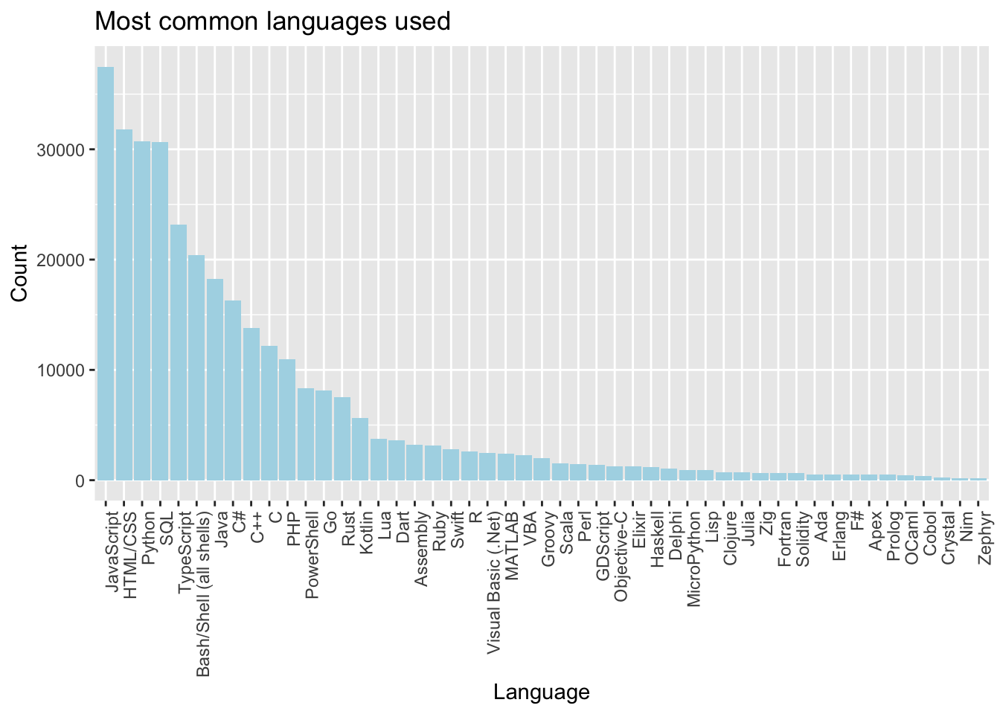
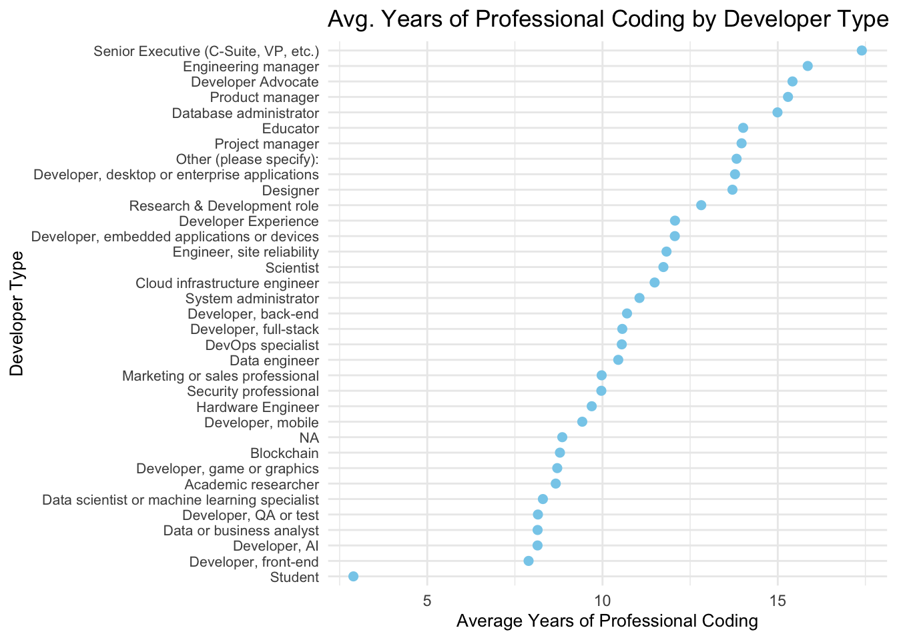

Warning in to_lodes_form(data = data, axes = axis_ind, discern =
params$discern): Some strata appear at multiple axes.
Warning in to_lodes_form(data = data, axes = axis_ind, discern =
params$discern): Some strata appear at multiple axes.
Warning: Computation failed in `stat_stratum()`.
Caused by error in `switch()`:
! EXPR must be a length 1 vector
Warning in to_lodes_form(data = data, axes = axis_ind, discern =
params$discern): Some strata appear at multiple axes.
Code
library(forcats)# Reorder DevType and place NA at the bottomavg_years_code_pro <- selected %>%group_by(DevType) %>%summarize(avg_years_code_pro =mean(as.numeric(YearsCodePro), na.rm =TRUE))
Warning: There were 35 warnings in `summarize()`.
The first warning was:
ℹ In argument: `avg_years_code_pro = mean(as.numeric(YearsCodePro), na.rm =
TRUE)`.
ℹ In group 1: `DevType = "Academic researcher"`.
Caused by warning in `mean()`:
! NAs introduced by coercion
ℹ Run `dplyr::last_dplyr_warnings()` to see the 34 remaining warnings.
Warning: There was 1 warning in `mutate()`.
ℹ In argument: `DevType = fct_explicit_na(DevType, na_level = "NA")`.
Caused by warning:
! `fct_explicit_na()` was deprecated in forcats 1.0.0.
ℹ Please use `fct_na_value_to_level()` instead.
Code
# Create the Cleveland dot plotggplot(avg_years_code_pro, aes(x = avg_years_code_pro, y =reorder(DevType, avg_years_code_pro))) +geom_point(color ="skyblue", size =2) +# Use points instead of barslabs(x ="Average Years of Professional Coding", y ="Developer Type", title ="Average Years of Professional Coding by Developer Type") +theme_minimal() +# Cleaner themetheme(axis.text.y =element_text(size =10), # Adjust y-axis text sizeaxis.title =element_text(size =12)) # Adjust axis title size
Code
SOVisitFreq_order <-c('Less than once per month or monthly', 'A few times per month or weekly', 'A few times per week', 'Daily or almost daily', 'Multiple times per day')selected$SOVisitFreq <-factor(selected$SOVisitFreq, levels = SOVisitFreq_order, ordered =TRUE)filtered_data <- selected |>filter(!is.na(AISelect) &!is.na(SOVisitFreq))contingency_table <-table(filtered_data$SOVisitFreq, filtered_data$AISelect)mosaicplot(contingency_table, color=TRUE, shade=TRUE, las =1)

Code
require(HH)
Loading required package: HH
Loading required package: lattice
Loading required package: grid
Loading required package: latticeExtra
Attaching package: 'latticeExtra'
The following object is masked from 'package:ggplot2':
layer
Loading required package: multcomp
Loading required package: mvtnorm
Loading required package: survival
Loading required package: TH.data
Loading required package: MASS
Attaching package: 'MASS'
The following object is masked _by_ '.GlobalEnv':
survey
The following object is masked from 'package:dplyr':
select
Attaching package: 'TH.data'
The following object is masked from 'package:MASS':
geyser
Loading required package: gridExtra
Attaching package: 'gridExtra'
The following object is masked from 'package:dplyr':
combine
Attaching package: 'HH'
The following object is masked from 'package:lubridate':
interval
The following object is masked from 'package:purrr':
transpose
The following object is masked from 'package:base':
is.R
# A tibble: 33 × 3
index category value
<chr> <chr> <int>
1 Learning about a codebase Currently.Using 11105
2 Learning about a codebase Interested.in.Using 14599
3 Learning about a codebase Not.interested.in.Using 6742
4 Project planning Currently.Using 4381
5 Project planning Interested.in.Using 11407
6 Project planning Not.interested.in.Using 15225
7 Writing code Currently.Using 29486
8 Writing code Interested.in.Using 3296
9 Writing code Not.interested.in.Using 2106
10 Documenting code Currently.Using 14439
# ℹ 23 more rows
Code
ggplot(data_long, aes(x = index, y = value, fill = category)) +geom_bar(stat ="identity", position ="fill") +# Use "fill" for proportionslabs(x ="Activity", y ="Count", title ="Which parts of your development workflow are you currently using AI tools for\nand which are you interested in using AI tools for over the next year?") +theme(axis.text.x =element_text(angle =45, hjust =1))

Code
ggplot(data_long, aes(x = index, y = category, fill = value)) +geom_tile() +scale_fill_viridis(option ="C") +# Color scalelabs(x ="Activity", y ="Category", title ="Heatmap of Interest in Development Activities") +theme(axis.text.x =element_text(angle =45, hjust =1))
Code
ggplot(data_long, aes(x = index, y = value, color = category)) +geom_point(position =position_jitter(width =0.1, height =0), size =3) +labs(x ="Activity", y ="Count", title ="Dot Plot of Interest in Development Activities") +theme(axis.text.x =element_text(angle =45, hjust =1)) +scale_color_manual(values =c("Currently_Using"="blue", "Interested_in_Using"="orange", "Not_interested_in_Using"="gray"))
Warning: No shared levels found between `names(values)` of the manual scale and the
data's colour values.
Warning: No shared levels found between `names(values)` of the manual scale and the
data's colour values.
Code
plot_ly(data_long, x =~index, y =~value, color =~category, type ='bar', text =~paste("Count: ", value), hoverinfo ='text') %>%layout(title ="Interest in Different Development Activities",xaxis =list(title ="Activity"),yaxis =list(title ="Count"),barmode ="dodge" )
Code
ggplot(selected, aes(x = AISelect, y = Age)) +geom_jitter(aes(color = AISelect), width =0.1, height =0.1, alpha =0.05) +theme_minimal() +labs(title ="Jitter Plot of AISelect vs Age",x ="AISelect",y ="Age")
Code
# Load necessary librarieslibrary(ggplot2)df_summary <-as.data.frame(table(selected$AISelect, selected$Age))ggplot(df_summary, aes(x = Var1, y = Var2, fill=)) +geom_tile() +scale_fill_viridis_c() +# Use a color scale to show densitytheme_minimal() +labs(title ="Heatmap of Counts for AISelect and Age",x ="AISelect",y ="Age") +theme(axis.text.x =element_text(angle =45, hjust =1))
Code
ggplot(selected, aes(x = DevType, fill = RemoteWork)) +geom_bar(position ="fill") +labs(x ="Developer Type", y ="Proportion of Remote Work", title ="Proportion of Remote Work by Developer Type") +theme(axis.text.x =element_text(angle =45, hjust =1))
Code
ggplot(selected %>%filter(!is.na(RemoteWork)), aes(x =as.factor(AISelect), y =as.numeric(JobSat))) +geom_jitter(aes(), alpha =0.1, width =0.2) +# Add jitter for better visibilitylabs(x ="AI Tool Selection", y ="Job Satisfaction",title ="AI Tool Usage vs Job Satisfaction by Age") +facet_wrap(~ Age) +# Facet by RemoteWork statustheme(axis.text.x =element_text(angle =45, hjust =1))
Warning: Removed 25689 rows containing missing values or values outside the scale range
(`geom_point()`).
Code
ggplot(selected, aes(x =as.factor(AISelect), y =as.numeric(JobSat))) +geom_jitter(aes(), alpha =0.1, width =0.2) +# Add jitter for better visibilitylabs(x ="AI Tool Selection", y ="Job Satisfaction",title ="AI Tool Usage vs Job Satisfaction by Age") +facet_wrap(~ SOVisitFreq) +# Facet by RemoteWork statustheme(axis.text.x =element_text(angle =45, hjust =1))
Warning: Removed 36311 rows containing missing values or values outside the scale range
(`geom_point()`).
Code
ggplot(selected, aes(x = AISelect, y =as.numeric(JobSat), fill = AISelect)) +geom_boxplot(alpha =0.6) +labs(x ="AI Tool Selection", y ="Job Satisfaction", title ="Job Satisfaction by AI Tool Selection") +facet_wrap(~ RemoteWork) +# Facet by RemoteWorkscale_fill_manual(values =c("lightblue", "lightgreen", "lightcoral")) +theme(axis.text.x =element_text(angle =45, hjust =1))
Warning: Removed 36311 rows containing non-finite outside the scale range
(`stat_boxplot()`).
Code
# Categorize JobSat into 3 levelsselected <- selected %>%mutate(JobSat_Grouped =case_when(as.numeric(as.character(JobSat)) >=0&as.numeric(as.character(JobSat)) <=3~"Low",as.numeric(as.character(JobSat)) >=4&as.numeric(as.character(JobSat)) <=7~"Medium",as.numeric(as.character(JobSat)) >=8&as.numeric(as.character(JobSat)) <=10~"High",TRUE~NA_character_# Keep NA for missing or invalid data ))# Remove rows with NA in JobSat_Grouped or WorkExpselected <- selected %>%filter(!is.na(JobSat_Grouped) &!is.na(WorkExp))# Create the plotggplot(selected, aes(x = WorkExp, fill = JobSat_Grouped)) +geom_density(alpha =0.6) +labs(x ="Work Experience (Years)", y ="Density", title ="Density of Work Experience by Job Satisfaction Categories") +facet_wrap(~ RemoteWork) +# Facet by RemoteWorkscale_fill_manual(values =c("skyblue", "lightgreen", "lightcoral"), # Adjust colors for 3 categoriesname ="Job Satisfaction") +theme(axis.text.x =element_text(angle =45, hjust =1))
Code
ggplot(selected, aes(x = SOPartFreq, fill = RemoteWork)) +geom_bar(position ="dodge", color ="black") +labs(x ="Participation Frequency", y ="Count", fill ="Remote Work Setup",title ="Participation Frequency vs. Remote Work Setup") +theme(axis.text.x =element_text(angle =45, hjust =1))
Code
ggplot(selected, aes(x = SOVisitFreq, fill = SOPartFreq)) +geom_bar(position ="fill", color ="black") +labs(x ="Visit Frequency", y ="Proportion", fill ="Participation Frequency",title ="Relationship Between Visit and Participation Frequency") +theme(axis.text.x =element_text(angle =45, hjust =1))
Warning: package 'maps' was built under R version 4.4.2
Attaching package: 'maps'
The following object is masked from 'package:viridis':
unemp
The following object is masked from 'package:purrr':
map
Code
# Load map datamap_data <-map_data("world")# Summarize Job Satisfaction data by countryjob_sat_data <- selected %>%filter(!is.na(JobSat_Grouped)) %>%# Remove missing valuesgroup_by(Country, JobSat_Grouped) %>%tally() %>%spread(JobSat_Grouped, n, fill =0) %>%mutate(Total = High + Medium + Low,High_Proportion = High / Total *100# Proportion of "High" satisfaction )# Merge map data with summarized job satisfaction datamerged_data <-left_join(map_data, job_sat_data, by =c("region"="Country"))# Plot the choropleth mapggplot(merged_data, aes(x = long, y = lat, group = group, fill = High_Proportion)) +geom_polygon(color ="black", size =0.1) +scale_fill_viridis(option ="magma", direction =-1, name ="High Job Sat (%)") +theme_void() +labs(title ="Job Satisfaction (High) Proportion by Country")
Warning: Using `size` aesthetic for lines was deprecated in ggplot2 3.4.0.
ℹ Please use `linewidth` instead.
Code
library(ggplot2)library(dplyr)# Prepare data: Count frequency of combinations of AIThreat and AISentai_threat_sentiment <- selected %>%filter(!is.na(AIThreat) &!is.na(AISent)) %>%count(AIThreat, AISent)# Create a stacked bar plotggplot(ai_threat_sentiment, aes(x = AISent, y = n, fill = AIThreat)) +geom_bar(stat ="identity") +labs(title ="AI Threat Perception vs AI Sentiment",x ="AI Sentiment",y ="Count",fill ="AI Threat") +theme_minimal() +theme(axis.text.x =element_text(angle =45, hjust =1))
Code
# Load necessary librarieslibrary(ggplot2)library(dplyr)library(tidyr)library(viridis)library(maps)# Assume 'selected' is the dataset you're working with# Step 1: Summarize the average Job Satisfaction by countryjob_sat_data <- selected %>%filter(!is.na(JobSat)) %>%# Remove rows with missing job satisfaction datagroup_by(Country) %>%# Group by countrysummarise(AvgJobSat =mean(as.numeric(as.character(JobSat)), na.rm =TRUE)) # Calculate average job satisfaction# Step 2: Get map datamap_data <-map_data("world")# Step 3: Merge the map data with the summarized job satisfaction datamerged_data <-left_join(map_data, job_sat_data, by =c("region"="Country"))# Step 4: Plot the choropleth mapggplot(merged_data, aes(x = long, y = lat, group = group, fill = AvgJobSat)) +geom_polygon(color ="black", size =0.1) +# Draw polygons with black bordersscale_fill_viridis(option ="magma", direction =-1, name ="Avg Job Sat") +# Use 'viridis' color scale for better visibilitytheme_void() +# Remove axis and grid lines for a cleaner maplabs(title ="Average Job Satisfaction by Country") # Add title
Code
# Load necessary librarieslibrary(ggplot2)library(dplyr)library(tidyr)library(viridis)library(maps)# Step 1: Summarize the proportion of people who think AI is a threat by countryai_threat_data <- selected %>%filter(!is.na(AIThreat)) %>%# Remove rows with missing datagroup_by(Country) %>%# Group by countrysummarise(ThreatCount =sum(AIThreat =="Yes", na.rm =TRUE), # Count how many think AI is a threatTotalCount =n(), # Count the total number of responsesProportionThreat = ThreatCount / TotalCount *100# Calculate the proportion )# Step 2: Get map datamap_data <-map_data("world")# Step 3: Merge the map data with the summarized AI threat datamerged_data <-left_join(map_data, ai_threat_data, by =c("region"="Country"))# Step 4: Plot the choropleth mapggplot(merged_data, aes(x = long, y = lat, group = group, fill = ProportionThreat)) +geom_polygon(color ="black", size =0.1) +# Draw polygons with black bordersscale_fill_viridis(option ="magma", direction =-1, name ="AI Threat Proportion (%)") +# Use 'viridis' color scaletheme_void() +# Remove axis and grid lines for a cleaner maplabs(title ="Proportion of People Who Think AI is a Threat by Country") # Add title